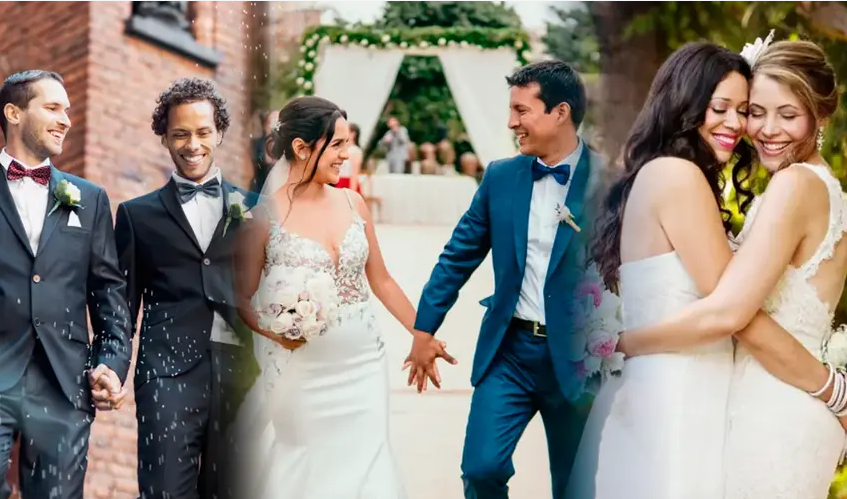

Tu matrimonio,
organizado paso a paso.
Registra la solicitud, administra documentos, revisa requisitos y consulta el estado del expediente desde un solo lugar.
Gestión del expediente matrimonial
Una experiencia digital clara para organizar cada etapa del procedimiento.
7 etapas del proceso
Nueva solicitud matrimonial
Completa la información para generar un expediente de demostración.
Gestor documental
Formatos referenciales y documentos cargados para la simulación.
Checklist del expediente
La lista se adapta a la municipalidad y al tipo de caso seleccionado.
Consulta de expediente
Ingresa el código generado por la plataforma.
Programación de ceremonia
Selecciona una fecha referencial para la simulación.
Sobre el proceso
Resumen visual de las etapas del trámite.
Contacto / Solicitud
Se inicia la gestión y se registran los datos del expediente.
Presentación de documentos
Se reúnen y organizan los documentos requeridos.
Evaluación
La documentación es revisada por la entidad.
Edicto
Se continúa con la publicación correspondiente según el procedimiento.
Programación
Se coordina fecha y modalidad de la ceremonia.
Ceremonia
Se realiza la ceremonia civil conforme a la programación.
Acta
Se completa la etapa final y se gestiona el acta.
Fuentes y referencias
Gob.pe — Plataforma del Estado Peruano ↗ Formato referencial de declaración jurada de testigos ↗Los requisitos y costos pueden variar según municipalidad y situación del contrayente. Verifica siempre la información oficial vigente.